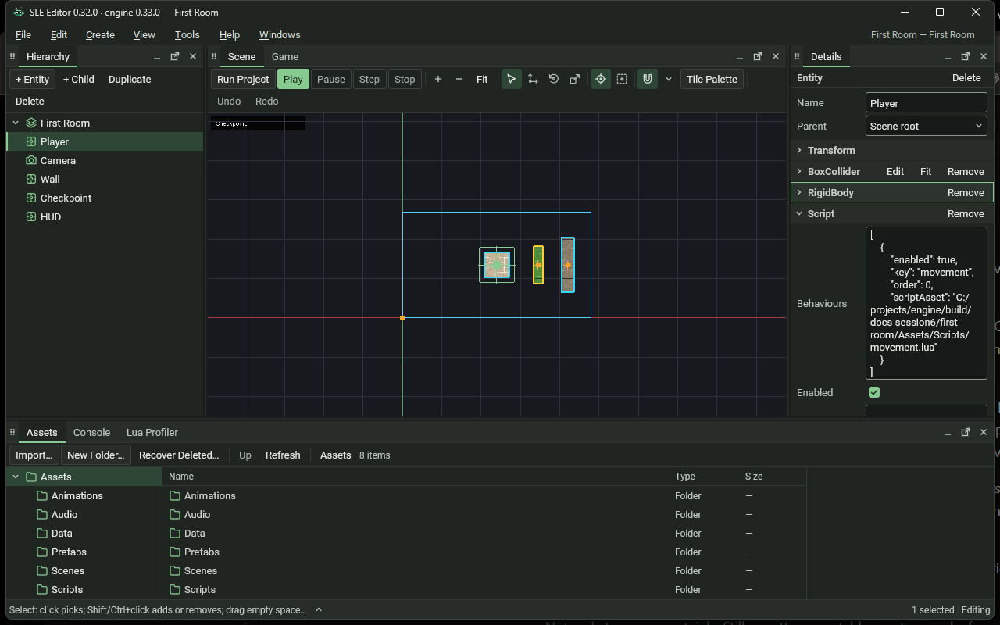

Move Player with Lua
Open the saved First Room scene and stop Play before editing. This chapter sets up keyboard input and the Player behaviour. The next chapter adds the physics body that the script drives.
Bind the movement keys
- Choose File → Project Settings… and open Input Actions.
- Enter
MoveLeftand choose Add action. Choose Add key beside it, then press A. - Add
MoveRightand bind D. Choose Save. The names are case-sensitive and the new bindings apply on the next Play or launch.
Attach the Player behaviour
- Select Player and choose New Lua Behavior… in Details. Enter
Scripts/movement.luaas the destination and choose Create and Attach. This creates the file underAssets/Scripts/and adds an enabled attachment namedmovementto Script. - Replace the generated Lua with the code below and save the file. Save the scene in the editor as well.
local enter, leave
local roomStatus = "Outside"
return {
init = function(entity)
enter = Engine.Events.subscribe("zone.enter", function(event)
if event.zoneId == "checkpoint" and event.entityB == entity then
roomStatus = "Inside"
Engine.log("First Room: entered checkpoint")
end
end)
leave = Engine.Events.subscribe("zone.exit", function(event)
if event.zoneId == "checkpoint" and event.entityB == entity then
roomStatus = "Outside"
Engine.log("First Room: left checkpoint")
end
end)
end,
update = function(entity, dt)
local direction = 0
if Engine.Input.isActionDown("MoveLeft") then direction = direction - 1 end
if Engine.Input.isActionDown("MoveRight") then direction = direction + 1 end
Engine.Physics.setVelocity(entity, 160 * direction, 0)
Engine.setUIBinding("roomStatus", roomStatus)
end,
destroy = function(entity)
if enter then Engine.Events.unsubscribe(enter) end
if leave then Engine.Events.unsubscribe(leave) end
end
}The engine calls init when the attachment starts, update each running frame, and destroy at teardown. The two subscription handles are local to this attachment and are released at teardown. See script behaviours and execution order.

Read input and set velocity
Engine.Input.isActionDown stays true while the bound key is held. The script sets horizontal velocity to 160 world units per second in the selected direction, so the velocity value stays the same across frame rates. Releasing both keys or holding both sets velocity to zero. After you add the body in the next chapter, click Game and hold A or D to check the movement. The camera stays centered on the room.
Play loads the attachment with the scene and runs its lifecycle. See the generated Lua API for the input, physics, and event signatures.
Lua can also inspect or edit supported components through Engine.Components. First Room uses the dedicated physics binding to control an authored rigid body. See scripting for the component API.